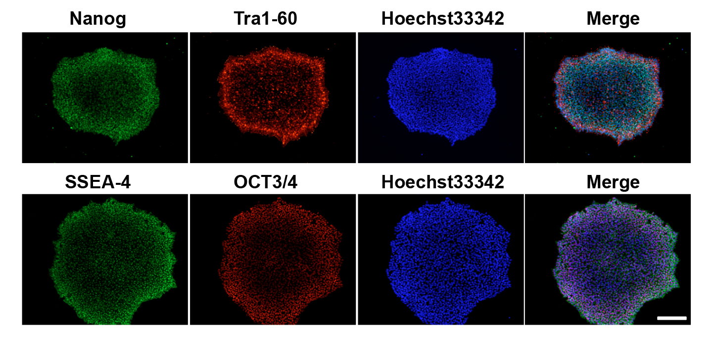

CRISPR & Gene Perturbation
I have generated multiple CRISPR-edited iPSC cell lines (Parkin KO, α-synuclein KO, LRRK2 KO, GBA KO) to assess protein function and mimic genetic forms of neurodegenerative diseases. GBA knockout heightened vulnerability to fibril-induced inclusions, whereas α-synuclein knockout abolished pathology entirely. Validation includes PCR, Western blotting, karyotyping, and ICC for pluripotency markers.
iPSC Colony QC & Pluripotency
I maintain rigorous QC across all iPSC lines including morphology assessment, pluripotency marker ICC (Oct4, Sox2, Nanog, TRA-1-60), mycoplasma testing, and karyotype validation. Colony morphology is monitored throughout expansion to ensure undifferentiated state.
